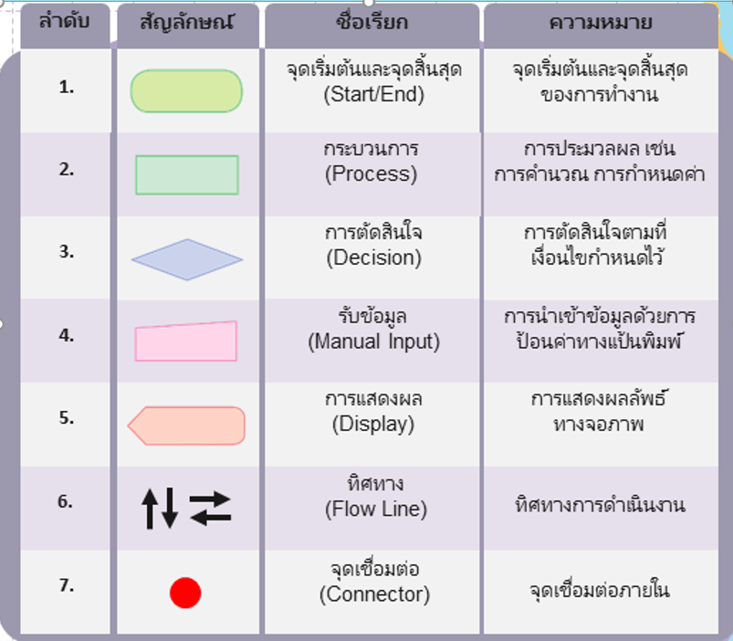
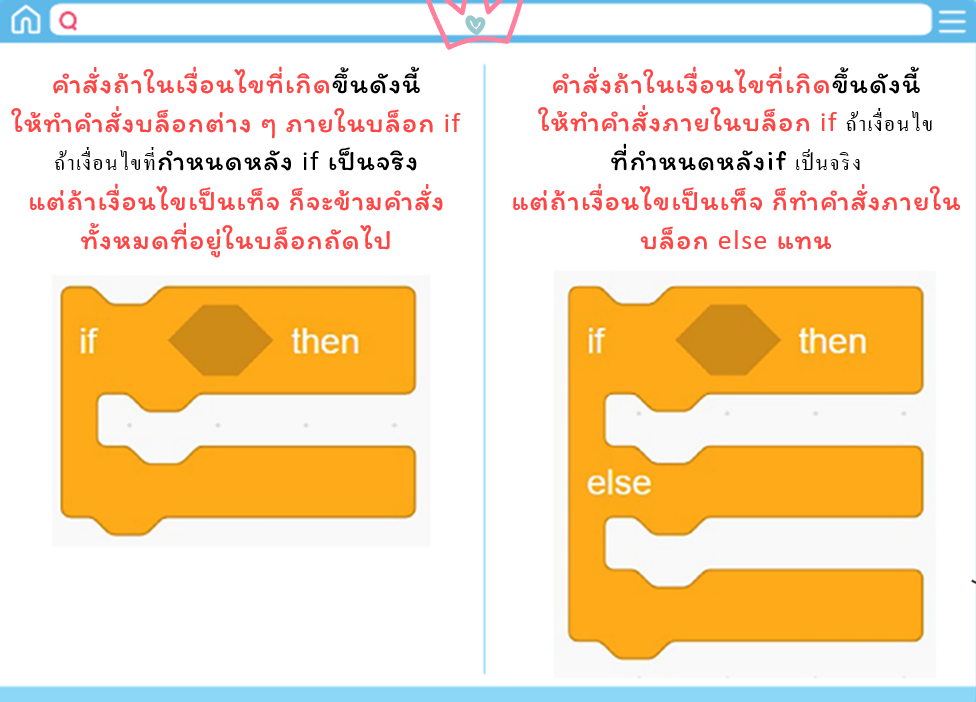
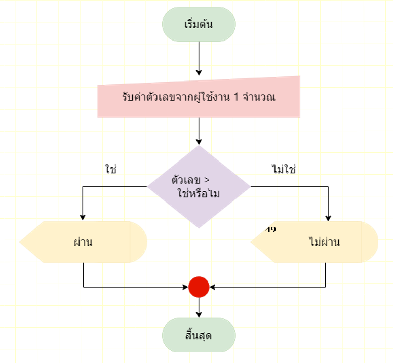

การเขียนโปรแกรมตรวจสอบคะแนน
scratch.
สัญลักษณ์ผังงาน

การสร้างเงื่อนไข ในโปรแกรม scratch
สถานการณ์
- สถานการณ์ : การตรวจคะแนนสอบ
ปูต้องการเขียนโปรแกรมตรวจสอบคะแนนสอบ ที่มีคะแนนเต็ม 100 คะแนน โดยถ้าผู้ใช้ป้อนคะแนนสอบต่ำกว่า 50 จะแสดงผลว่า "ไม่ผ่าน" แต่ถ้าผู้ใช้ป้อนคะแนนตั้งแต่ 50 คะแนนขึ้นไป จะแสดงผลว่า "ผ่าน"
- สถานการณ์ : การตรวจคะแนนสอบ
ถ้ากรอกคะแนนมากกว่า 100 คะแนน จะแสดงผลว่า "คุณกรอกคะแนนเกิน 100 คะแนน" 2. ถ้ากรอกคะแนนน้อยกว่า 0 คะแนน จะแสดงผลว่า "คุณกรอกคะแนนผิดพลาด"
เงื่อนไข
- เงื่อนไขที่ 1
ถ้าผู้ใช้ป้อน คะแนนสอบต่ำกว่า 50 จะแสดงผลว่า "ไม่ผ่าน"
- เงื่อนไขที่ 2
ถ้าผู้ใช้ป้อนคะแนน ตั้งแต่ 50 คะแนนขึ้นไป จะแสดงผลว่า "ผ่าน
การเขียนผังงาน
